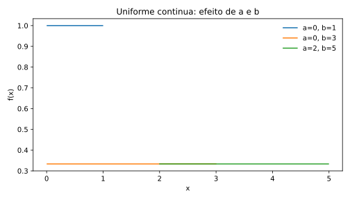

VAC
Variáveis aleatórias contínuas
Distribuições para grandezas medidas em escala contínua. Probabilidades são obtidas pela área sob a densidade.
Estrutura de uma VAC
Uniforme contínua
\(a\) e \(b\) são os limites inferior e superior, com \(a<b\). No R: min=a e max=b.

dunif(2, min=0, max=5) punif(2, min=0, max=5) runif(1000, min=0, max=5)
Exponencial
\(\lambda>0\) é a taxa. No R, a parametrização padrão é rate=lambda; a escala é \(1/\lambda\).
dexp(5, rate=.2) pexp(5, rate=.2) rexp(1000, rate=.2)
Gama
\(\alpha>0\) é a forma e \(\beta>0\) a taxa. No R: shape=alpha, rate=beta. Alternativamente, scale=1/beta. Não use rate e scale simultaneamente.
dgamma(4, shape=3, rate=.5) pgamma(4, shape=3, rate=.5) rgamma(1000, shape=3, rate=.5)
Normal
\(\mu\) controla a localização e \(\sigma>0\) a dispersão. A acumulada não possui forma elementar simples. No R, mean=mu e sd=sigma.

dnorm(12, mean=10, sd=2) pnorm(12, mean=10, sd=2) qnorm(.975, mean=10, sd=2) rnorm(1000, mean=10, sd=2)
pnorm(10.2,10,.1)-pnorm(9.8,10,.1) calcula a probabilidade de uma peça ficar entre 9,8 e 10,2 mm.Beta
\(\alpha,\beta>0\) controlam a forma. É útil para proporções e quantidades contínuas restritas a \((0,1)\). No R: shape1 e shape2.
Weibull
\(k>0\) é a forma e \(\lambda>0\) a escala. No R: shape=k, scale=lambda. É central em confiabilidade porque a forma controla o comportamento da taxa de falha.
dweibull(100, shape=2, scale=120) pweibull(100, shape=2, scale=120) rweibull(1000, shape=2, scale=120)
Lognormal
Se \(\log X\sim N(\mu,\sigma^2)\), então \(X\) é lognormal.
meanlog e sdlog são média e desvio-padrão de \(\log X\), não de \(X\).Qui-quadrado
A distribuição \(\chi^2_\nu\) tem suporte positivo e surge naturalmente na inferência sobre variâncias normais.
\(\nu>0\) representa os graus de liberdade. No R: dchisq, pchisq, qchisq e rchisq.